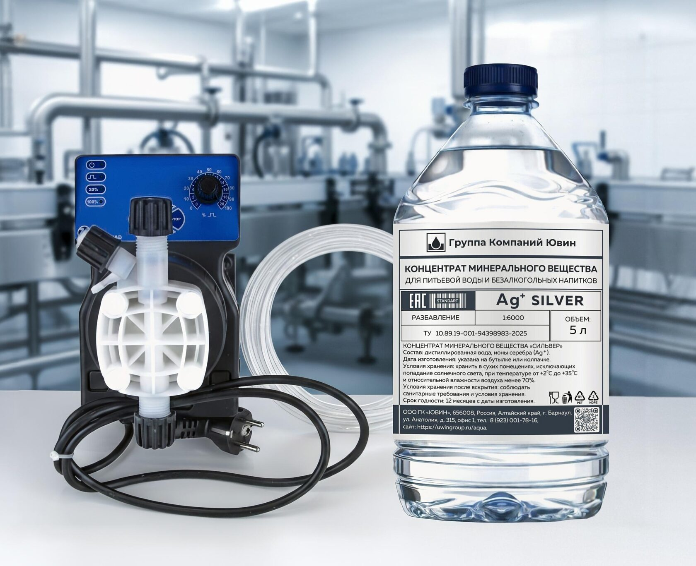
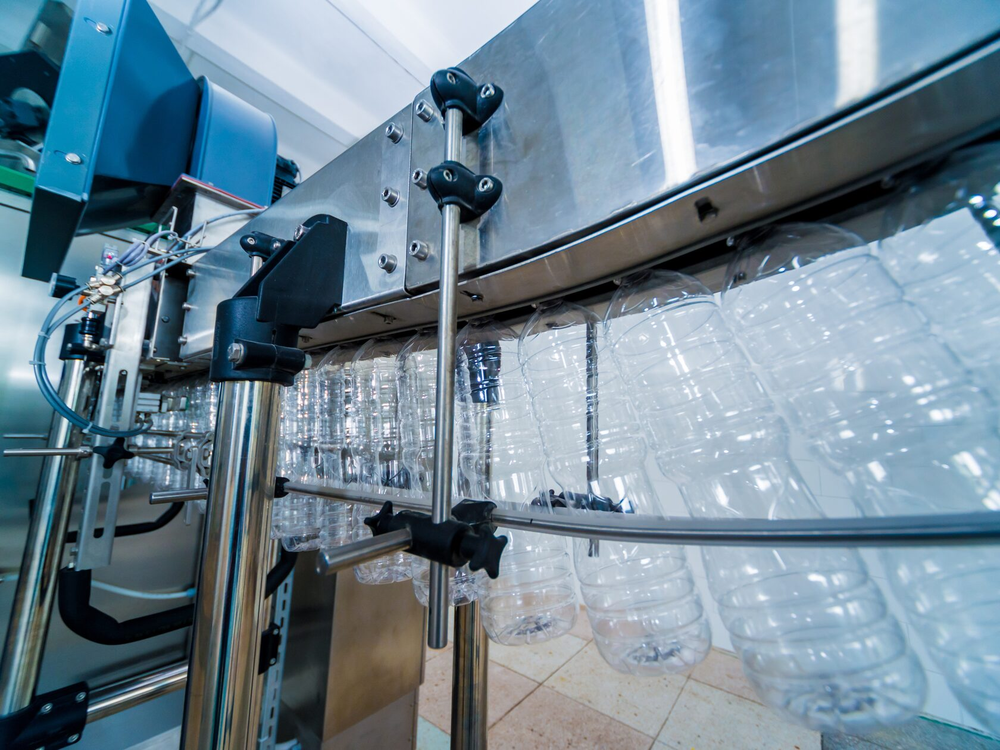

После розлива продукт выходит из прямого контроля завода
Свет, тепло, время, складская логистика и условия использования уже невозможно контролировать лабораторией предприятия.

Группа компанийПищевая добавка · декларация ЕАЭС
SILVER Ag+ исключает риск запаха, помутнения и позеленения — на складе, в логистике, на полке и у клиента.

01 / Зона действия
Основные риски проявляются не в момент выпуска партии, а позже — когда продукт уже покинул площадку производителя.
Свет, тепло, время, складская логистика и условия использования уже невозможно контролировать лабораторией предприятия.
Точная расчётная дозировка даёт предсказуемый и воспроизводимый результат на всём сроке хранения.
02 / Что даёт решение
SILVER Ag+ защищает продукт после розлива и дополнительно поддерживает микробиологическую стабильность линии между плановыми мойками.
Прозрачность, стабильный внешний вид и отсутствие постороннего запаха до 24 месяцев.
Стабильность качества защищает доверие к бренду, место на полке и отношения с дистрибьюторами.
Ионы серебра присутствуют в контуре в рабочем режиме и сдерживают развитие случайной микрофлоры.
03 / Область применения
SILVER Ag+ применяется в производстве питьевой и минеральной воды, а также напитков на водной основе — в стекле и ПЭТ.
04 / Регуляторный статус
В основе решения — пищевая добавка SILVER Ag+, предназначенная для производства питьевой воды и напитков.
В основе решения — пищевая добавка SILVER Ag+, предназначенная для применения в производстве питьевой воды и напитков
Добавки для бассейнов, бытовые дезинфектанты, технические реагенты и прочие непищевые средства, которые не могут использоваться в пищевом продукте
Подтверждает соответствие требованиям безопасности к пищевой продукции и пищевым добавкам
05 / Ключевое отличие
УФ, озон и фильтры снижают микробиологическую нагрузку в момент водоподготовки. SILVER Ag+ продолжает защищать продукт уже после розлива.
Работают на отдельном этапе водоподготовки и не остаются внутри продукта после упаковки.
Могут давать плавающий результат насыщения. SILVER Ag+ вносится в точной расчётной дозировке.
Остаётся внутри упаковки и продолжает работать при хранении, логистике и реализации.
06 / Коммерческий смысл
Для покупателя прозрачность, стабильный внешний вид и отсутствие запаха — базовое ожидание от продукта в любом формате упаковки.
Вода — категория, в которой малейшее сомнение в качестве быстро превращается в претензию.
Стабильный внешний вид и отсутствие постороннего запаха сохраняют ожидаемое качество.
Стабильность продукта поддерживает повторные закупки и долгосрочную работу с дистрибуцией.
07 / Внедрение
Стандартный дозирующий насос, точная расчётная подача и работа вместе с технологом производства — без изменения основного процесса розлива.

Производительность, формат тары, действующая водоподготовка и место возможного ввода.
Определяем точку дозирования, параметры насоса и рабочую дозу под фактический объём.
Готовим опытную и контрольную партии, фиксируем условия и показатели сравнения.
Передаём параметры дозирования и рекомендации для промышленного применения.
08 / Основания доверять
Сильные заявления подкрепляем документами, практическим опытом и сравнительным тестом на вашей воде и вашей линии.
Пищевая добавка для производства питьевой воды и напитков. Полный комплект документов предоставим технологу и службе качества.
Вы видите разницу на собственном продукте до перехода к промышленному применению.
09 / Следующий шаг
Проводим тест вместе с технологом предприятия: от схемы ввода до сравнения контрольной и опытной партий.
Определяем вид воды, объём тестовой партии, точку ввода и условия хранения.
Контрольная партия без добавки и опытная партия с расчётной дозировкой SILVER Ag+.
Сравниваем микробиологию, прозрачность, запах и внешний вид в заданных условиях.
По итогам: схема ввода, рабочая дозировка, сравнение партий и рекомендации по внедрению.
10 / Вопросы технолога
Коротко отвечаем на вопросы о составе, внесении в линию, документах и контроле результата.
Это пищевая добавка на основе дистиллированной воды и ионов серебра Ag+, предназначенная для производства питьевой воды и напитков на водной основе.
В действующий производственный контур через стандартный дозирующий насос. Конкретную точку ввода и параметры подачи определяем по схеме вашей линии.
Основной процесс розлива не меняется. До пилота инженер проверяет доступную точку подключения и совместимость оборудования с фактической конфигурацией линии.
Расчётная дозировка предназначена для сохранения органолептических свойств воды. Это отдельно контролируется на опытной и контрольной партиях.
Для питьевой и минеральной воды, а также напитков на водной основе в ПЭТ и стекле — от 0,33 до 19 литров.
Нет. Технология поддерживает микробиологическую стабильность линии между плановыми мойками, но не заменяет регламентную санитарную обработку.
Предоставляем декларацию ЕАЭС № RU Д-RU.РА09.В.07948/25 и комплект документов для работы технолога и службы качества.
Рабочая схема ввода, рассчитанная дозировка, параметры сравнительного контроля и рекомендации для промышленного применения.
11 / Сервис для производства
Сопровождаем внедрение оборудования на линии: от инженерного подбора и пусконаладки до модернизации, маркировки и сервисной поддержки.
Подбор и адаптация оборудования под конкретные производственные задачи.
ПОДБОР · АДАПТАЦИЯВстраиваем маркировку в действующие линии розлива: оборудование, ПО, агрегация и обмен данными.
ОБОРУДОВАНИЕ · ПО · ДАННЫЕПрофессиональная интеграция решений в действующие линии розлива.
МОНТАЖ · ИНТЕГРАЦИЯНастройка оборудования под реальные параметры производства.
НАСТРОЙКА · ЗАПУСКОперативная поддержка при сбоях печати, верификации, отбраковки, агрегации и обмена данными.
ПЕЧАТЬ · ВЕРИФИКАЦИЯ · ДАННЫЕРаботаем с оборудованием и решениями в долгосрочной перспективе.
ГАРАНТИЯ · СОПРОВОЖДЕНИЕПовышение производительности существующих линий.
ПРОИЗВОДИТЕЛЬНОСТЬ · ОБНОВЛЕНИЕВыявление узких мест и оперативное устранение неисправностей.
ДИАГНОСТИКА · РЕМОНТРазработка схем под конкретные производственные условия.
ПРОЕКТИРОВАНИЕ · ВНЕДРЕНИЕОпишите текущую задачу — подберём формат работ и необходимые компетенции.
Контакты
Подберём сценарий применения, формат тестовой партии и список данных для оценки эффекта.
БЕСПЛАТНЫЙ ПИЛОТ · 0,5 Л → 3 ТОННЫ
СХЕМА ДОЗИРОВАНИЯ · SILVER Ag+
ДОКУМЕНТЫ НА SILVER Ag+
СЕРВИСНАЯ ЗАДАЧА · ГК «ЮВИН»